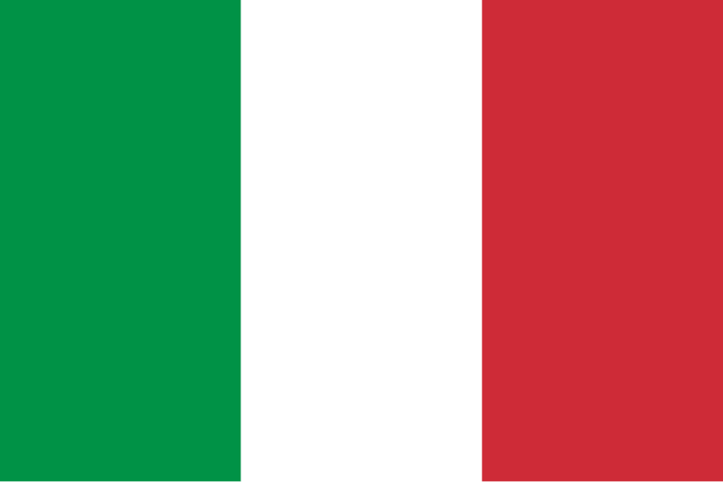

Hint: click the flag
The world offers a wide variety of tasty dishes, east and west, north and south, each continent, region and country has a dish that it considers its pride. Here, we are going to share with you one dish from every continent. Enjoy!
Oh Africa, a land so rich and diverse, one can easily get lost trying to find a good dish to represent you. We present one dish, but a million other is waiting for you to discover them!
Representing Africa is:
Asia, Asia, Asia! So vast and so diverse, you can be a planet of your own. But we can only pick one dish from you.
Representing Asia is:
Exotic Europe, offering everything from Fish Pies (Ghoti, anyone?) to Ratatouille. But what we offer, is something else
What can't be said about North America, it got it all

Sorry South America and Oceania, I will complete the recipes another time.